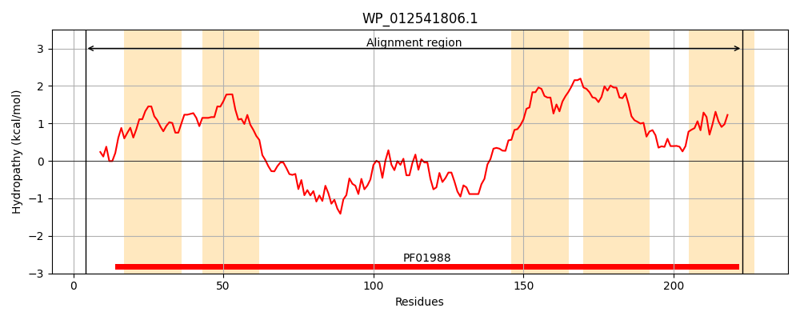
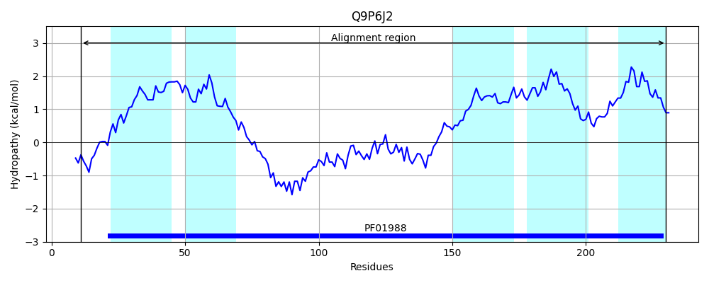
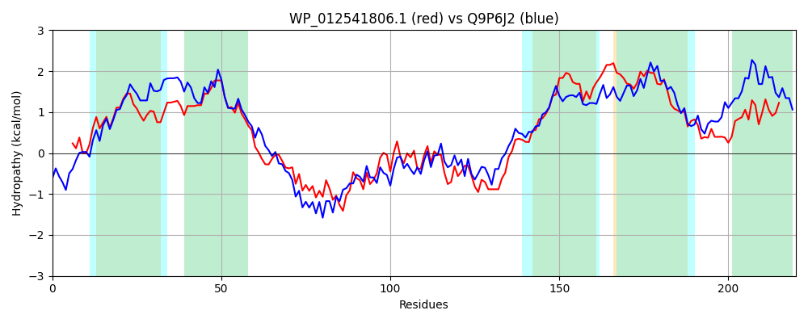

Hit Accession: Q9P6J2
Hit TCID: 2.A.89.3.8
Hit Description: gnl|BL_ORD_ID|18749 gnl|TC-DB|Q9P6J2|2.A.89.3.8 Fe(2+)/Mn(2+) transporter pcl1 OS=Schizosaccharomyces pombe (strain 972 / ATCC 24843) GN=pcl1 PE=1 SV=1
Mach Len: 220
e:0.000000
Query TMS Count : 5
Hit TMS Count: 5
TMS-Overlap Score: 5.050000
Predicted Substrates:CHEBI:34754;iron(2+), CHEBI:29035;manganese(2+)
BLAST Alignment:
Score: 498 , Bit scores: 196 bits, E-value: 4.1e-63, Alignment length: 220, Percentage identity: 47
Query: 4 ERHSIESVGWLRAAVLGANDGIVSTASLVLGVASANTSPSGVLLAGVAGLVAGAMSMATGEYVSVSSQADTETAALAEEKSELDADYQGEVRELTSLYIQRGVEPALARQVAEQLMAKDALEAHAREELGLTDTHSARPLQAAIFSAVSFSAGAGLPLIVAVLSPAKLTVIAIFLSTLCSLAALGYFSSVVSNAPPVRAISRITFWSTLAMLFSMGIGRI 223
E HS+ +GWLRA+VLGANDGI+S + L++GV +AN +L+ GVAGL++GA+SMA GEYVSVSSQAD E A L E+ E+DAD+ EV EL ++Y RG++ L+R VA QLM +ALEAHAR+ELG+ +A+P AA+ SA SFS G PL+ ++++P + + + ++T+ L LG+ + + A VRAI R LAM + +GR+
Sbjct: 11 EAHSVNKIGWLRASVLGANDGILSLSGLLVGVVAANADIKVILITGVAGLMSGALSMAVGEYVSVSSQADLEDADLQLERREMDADWDAEVDELAAIYRGRGLDEELSRTVAVQLMEYNALEAHARDELGINIHTTAKPTLAALSSAASFSVGGIFPLLTSLITPLEYLSLVLPIATMFFLGMLGFVGAHIGGAKRVRAILRAVVLGLLAMAATALVGRL 230 | Protein Hydropathy Plots: |
|---|
|  |  |
Pairwise Alignment-Hydropathy Plot:
|
|---|
|  |